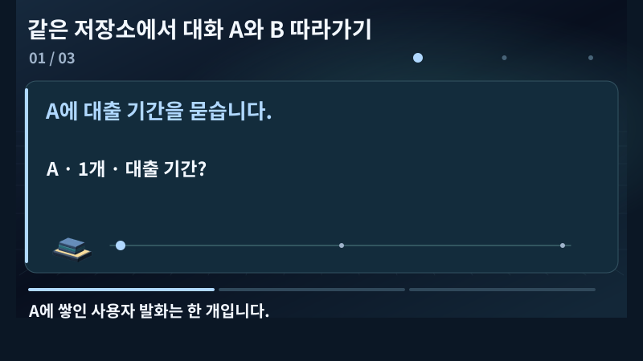
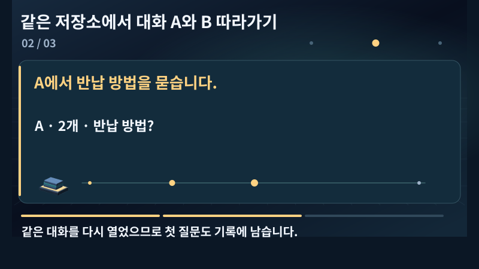
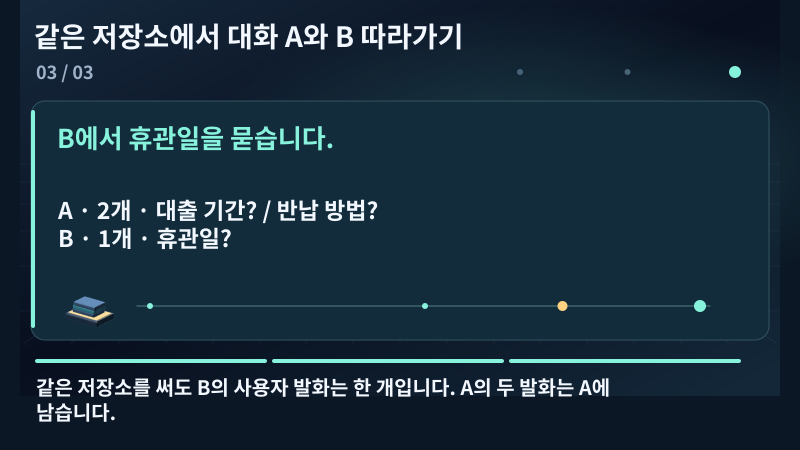

체크포인터로 대화를 이어가고 분리하기
대출 기간을 질문한 사람이 곧바로 반납 방법을 묻습니다. 다음 요청에서 앞선 대화를 쓰려면 메시지 목록을 병합하는 규칙과 대화별 저장 위치가 모두 필요합니다.
수업 노트북
실행을 확인한 커널은 Python 3.12.15입니다. 예제에 사용한 외부 패키지는 langchain-core 1.6.12, langgraph 1.2.16, langgraph-checkpoint 4.3.0입니다.
첫 질문이 저장된 곳 찾기
‘첫 질문’를 ‘대화별 저장’에 남기는 시점과 ‘이어서 읽기’를 확인하는 시점을 구분하세요.
같은 대화 ID를 써야 이전 질문을 이어서 읽습니다.
체크포인터는 그래프가 실행되는 동안 상태를 보관합니다. thread_id가 어느 대화의 상태를 읽고 쓸지 가리킵니다. 노트북에서는 그래프 하나와 메모리 저장소 하나를 만들어 여러 번 사용합니다.
셀 01 · A 대화 열기
제공 함수는 가상 답변을 만들어 실제 LangGraph의 InMemorySaver에 저장합니다. 그래프는 이 셀에서 한 번만 만드세요.
from typing import Annotated, TypedDict
from langgraph.graph import StateGraph, START, END
from langchain_core.messages import HumanMessage, AIMessage, AnyMessage
from langgraph.graph.message import add_messages
from uuid import uuid4
from langgraph.checkpoint.memory import InMemorySaver
class State(TypedDict):
messages: Annotated[list[AnyMessage], add_messages]
def respond(state: State) -> dict:
humans = [m for m in state["messages"] if isinstance(m, HumanMessage)]
if not humans:
raise ValueError("사용자 메시지가 필요합니다.")
content = f"이 대화의 사용자 발화 {len(humans)}개. 최근 질문: {humans[-1].content}"
return {"messages": [AIMessage(content=content, id=str(uuid4()))]}
def make_graph():
builder = StateGraph(State)
builder.add_node("respond", respond)
builder.add_edge(START, "respond")
builder.add_edge("respond", END)
return builder.compile(checkpointer=InMemorySaver())
def config_for(thread_id: str) -> dict:
if not thread_id.strip():
raise ValueError("대화 ID가 필요합니다.")
return {"configurable": {"thread_id": thread_id}}
def send(graph, thread_id: str, question: str):
if not question.strip():
raise ValueError("질문이 비어 있습니다.")
update = {"messages": [HumanMessage(content=question, id=str(uuid4()))]}
return graph.invoke(update, config=config_for(thread_id))
graph = make_graph()
reply = send(graph, 'A', '대출 기간?')
print(reply['messages'][-1].content)실행 결과
이 대화의 사용자 발화 1개. 최근 질문: 대출 기간?
사용자 발화가 1개로 나옵니다. respond가 이 대화 안의 HumanMessage만 세므로 AI 답변은 개수에 들어가지 않습니다.
셀 02 · 같은 대화 이어 쓰기
이미 저장된 첫 질문을 다시 넘기지 말고 두 번째 질문만 보냅니다.
reply = send(graph, 'A', '반납 방법?')
print(reply['messages'][-1].content)실행 결과
이 대화의 사용자 발화 2개. 최근 질문: 반납 방법?
사용자 발화 2개가 되었습니다. 같은 저장소와 같은 A를 썼기 때문입니다. 중간에 첫 셀을 다시 실행하면 저장소를 새로 만들어 과거 상태가 사라집니다.
새 대화가 읽는 상태
기존 대화의 질문과 새 대화의 첫 질문을 나란히 읽으세요.
새 대화는 다른 대화의 질문을 읽지 않습니다.
학생 두 명에게 같은 대화 ID를 주면 기록이 섞일 수 있습니다. 새 대화 ID와 기존 대화 ID는 서로 다른 상태를 가리킵니다. InMemorySaver의 기록은 현재 프로세스가 끝나면 사라집니다.
과제 03 · B 대화의 첫 질문 세기
B 대화에 ‘휴관일?’을 보내 마지막 답의 발화 수를 확인하세요.
A의 두 번의 왕복은 사용자 → 답변 → 사용자 → 답변 순입니다. 전체 메시지는 4개, 그중 사용자 질문은 2개입니다. B에서 첫 질문 수가 1이 되어도 A의 네 메시지는 같은 저장소의 다른 ID 아래 남아 있습니다.
# graph는 그대로 사용하고 대화 ID만 B로 바꾸세요.풀이와 실행 결과 보기
reply_b = send(graph, 'B', '휴관일?')
print(reply_b['messages'][-1].content)실행 결과
이 대화의 사용자 발화 1개. 최근 질문: 휴관일?
A에 두 번 질문했어도 B의 첫 질문은 1개입니다. B에서 3개라면 호출 때 전달한 ID부터 살펴보세요.
같은 저장소에서 대화 A와 B 따라가기
대화 ID가 바뀔 때 어느 대화의 이전 발화를 불러오는지 살펴보세요.
같은 저장소에서 대화 A와 B가 각각 어떤 질문을 다시 읽는지 보세요.
체크포인트는 대화 식별자별로 조회합니다. 같은 저장소를 써도 대화 내용은 분리됩니다.
- 01A 첫 질문
- 02A 후속 질문
- 03B 첫 질문

STEP 01 · thread_id = AA에 대출 기간을 묻습니다.
A에 쌓인 사용자 발화는 한 개입니다.
A · 1개 · 대출 기간?

STEP 02 · thread_id = AA에서 반납 방법을 묻습니다.
같은 대화를 다시 열었으므로 첫 질문도 기록에 남습니다.
A · 2개 · 반납 방법?

STEP 03 · thread_id = BB에서 휴관일을 묻습니다.
같은 저장소를 써도 B의 사용자 발화는 한 개입니다. A의 두 발화는 A에 남습니다.
A · 2개 · 대출 기간? / 반납 방법? B · 1개 · 휴관일?
다시 풀어 보기
graph.get_state(config_for('A')).values에서 메시지 수를 예측해 보세요. 두 발화에 각각 답이 붙어 총 네 개입니다. 이미 실행한 셀을 반복하면 그만큼 새 발화가 더해집니다.
관련 개념 더 읽기
세 가지 역할을 나누기
add_messages는 새 메시지를 기존 목록에 어떻게 반영할지 정합니다. 체크포인터는 대화별 그래프 상태를 저장하고 다음 실행에서 이어 쓰게 합니다. thread_id는 어느 대화의 상태를 사용할지 지정하는 이름입니다. 같은 이름을 써도 다른 저장소 객체를 만들면 이전 기록을 찾을 수 없습니다.
| 요소 | 질문 | 이 예제 |
|---|---|---|
| messages 갱신 규칙 | 새 메시지를 어떻게 합칠까? | add_messages |
| 체크포인터 | 대화 상태를 어디에 보관할까? | InMemorySaver의 RAM |
| thread_id | 어느 대화를 이어갈까? | A / B / C |
파일과 실행 준비
Python 3.12.x, langgraph 1.2.22, langchain-core 1.8.0을 기준으로 확인합니다. API 키나 서버는 필요 없습니다. 설치 후에는 로컬 메모리에서 예제가 실행됩니다. 기존 가상환경을 사용할 때는 패키지 버전을 먼저 확인하세요.
체크포인터를 붙이고 그래프를 재사용하기
make_graph는 호출할 때 InMemorySaver를 새로 만듭니다. 예제의 시작에서 한 번만 호출해 graph를 만든 뒤 여러 send 호출에 같은 객체를 넘깁니다. 질문을 보낼 때마다 make_graph를 다시 호출하면 그때마다 새 저장소가 생겨 이전 상태가 이어지지 않습니다.
RAM에 있는 상태는 프로그램이 종료되면 사라집니다. 이 동작을 데이터베이스 영구 저장으로 설명하지 마세요. 후반 서비스에서는 보관 기간·삭제·접근 제어까지 별도 설계합니다. 여기서는 저장소 수명과 대화 구분의 원리를 확인합니다.
같은 대화에는 같은 ID와 새 입력 보내기
thread_id는 State의 messages 안에 넣지 않고 호출 config의 configurable에 넣습니다. send는 이번 사용자 질문 한 개만 변경분으로 보냅니다. 체크포인터가 가져온 이전 상태에 add_messages 규칙으로 새 입력이 반영되고 respond가 실행됩니다.
이전 전체 기록을 새로운 ID로 다시 만들어 보내면 이전 질문이 중복 추가될 수 있습니다. 새 질문과 이미 저장된 이력의 책임을 나눕니다. 이 장은 수정·삭제 요청을 구현하지 않으며 새 입력 추가만 다룹니다.
상태 조회로 대화 분리 확인하기
get_state는 해당 대화의 저장 상태를 읽습니다. 이 코드에서는 조회한다고 respond가 다시 실행되거나 답변이 추가되지 않습니다. 반대로 invoke는 그래프를 실행합니다. 이전 실행 결과를 확인하려고 같은 질문을 invoke로 반복 보내면 새 메시지가 생기는 이유를 구분하세요.
새 대화와 저장소 수명 실험하기
| 증상 | 확인 | 조치 |
|---|---|---|
| 같은 대화가 이어지지 않음 | graph 객체·thread_id | 같은 graph와 같은 ID인지 비교 |
| 다른 대화가 섞임 | A/B에 실제로 전달한 ID | 호출 인자 기록 확인 |
| 질문이 중복됨 | 전체 이력 재전송·새 ID | 이번 새 사용자 입력만 전달 |
| 프로그램 재실행 후 기록 없음 | InMemorySaver 수명 | RAM 저장의 정상 범위로 기록 |
| 빈 대화 ID 오류 | config_for 입력 | 비어 있지 않은 학습용 ID 사용 |
관찰을 기록하고 다음 장에 넘기기
templates/graph/thread-isolation.json을 작업 폴더의 graph/thread-isolation.json으로 복사합니다. expected_before_run은 실행 전에, observed는 실제 실행 후에 채웁니다. null은 아직 확인하지 않았다는 뜻이며 통과가 아닙니다.
| 위치 | 기록 |
|---|---|
| entry_evidence | 28장 메시지 갱신 사례와 오늘 thread_id의 역할 비교 |
| AB_two_turns | A/B 각각 두 요청의 thread_id·입력·실제 메시지 목록 |
| C 전후 / A 재조회 | C 시작이 A를 지우지 않음, 조회는 응답을 추가하지 않음 |
| new_store_same_A | 새 InMemorySaver에서 같은 A의 상태와 저장소 수명 설명 |
graph/thread-isolation.json에 A/B 각 두 질문·C 시작 전후·A 보존·반복 조회·새 저장소를 기록합니다. 새 C 시작은 삭제가 아니며, get_state는 새 답변 생성이 아님을 설명합니다. 이후 수업에 이 관찰을 넘기되 30장의 순차 RAG에 대화 메모리를 억지로 붙이지 않습니다. 장기 Store와 운영 정책은 후속 수업에서 다룹니다.